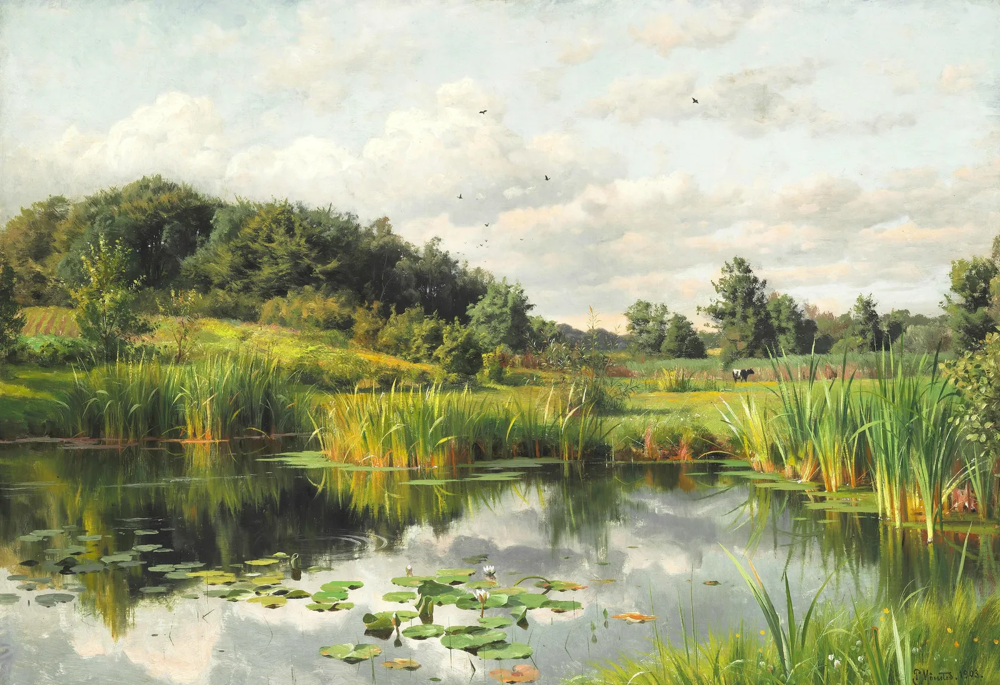

Петер Мёрк Мёнстед, 1859 -1941. Дания 1903 Летний день на озере
Такими были и речка Гусь и небольшие заводи за мостом между улицами Нижегородской и Ломоносова. Туда я и отправлялся гулять с пяти лет. До этого я видел только ромашки и другие цветы на земле и заходил в холодноватую воду речки перед домом на улице Текстильщиков.
Небольшое болотце и тёплая вода с водяными цветами лотоса меня потрясли.
Не умея плавать, я дотягивался до первых цветков лотоса и был счаслив от вида и нежного аромата. С тех пор я как-то остыл к своим неуклюжим игрушкам и больше времени проводил на природе, в лесу, у речки.
Но уже в 15 лет, с 1965 года я туда не ходил. Так из моей речки детства в годы послевоенного восстановления и индустриализации образовалась зловонная канава с тем же названием - речка Гусь. В этом месте её углубили, видимо по просьбе трудящихся живших у берега, и она не образовывала теперь заводей, а новые дома отделили от речки насыпью со щебнем похожими на дорогу.
Позже, разрабатывая систему ценностей человека, по впечатлениям детства символвы ценностей я создал похожими на ромашку и лотус - https://wha2025.ru/ru/
https://boris-1950.github.io/wha2025/index.html


Надеюсь, мир обретёт стабильность и будет мир во всём мире как этой картинке